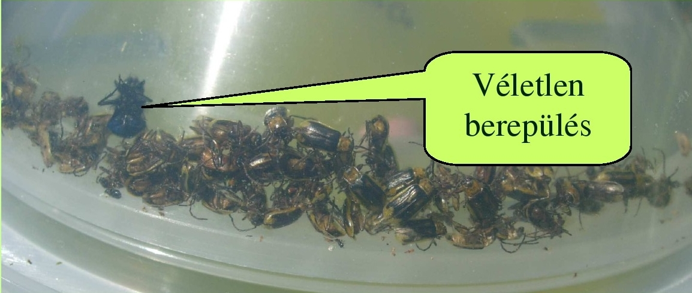
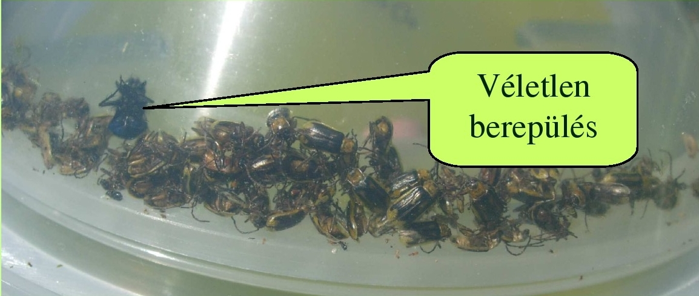

Miért érdemes feromoncsapdát használni?
A feromonok gyakorlati alkalmazásának legkézenfekvőbb módja, ha csalétekként csapdába helyezzük őket és a fogás alapján tájékozódunk a kártevő fajok jelenlétéről, rajzáskezdetéről, populációnagyságáról és rajzásmenetéről egy kérdéses területen. Ez a módszer hatékonyabb, célzottabb, környezetbarátabb és kevesebb költséggel járó vegyszeres növényvédelmet biztosít a termesztők számára. Ebben a rövid ismertetőkben szeretnénk bemutatni, hogy miért érdemes feromoncsapdát használni, és melyek azok az értékes, fontos információk, amelyekhez a feromoncsapda segítségével hozzájuthatunk.
Válasszon témakört!
NEM KELL TALÁLGATNUNK - A FEROMONCSAPDÁVAL PONTOSAN MÉRHETŐ!
Az éghajlati, földrajzi viszonyok, a termesztett növények fajtája, vagy az adott év időjárási viszonyainak különbözősége miatt, eltérő területeken különbözhet, hogy melyik kártevő faj okozza a kártétel „gerincét". Az egyes, hasonló kártételt okozó, vagy közeli rokonságban álló fajok egymástól gyakran eltérő időben rajzanak a vegetációs időszak során.
A kérdésünkre a választ, hogy a vizsgált területünkön melyik faj rajzik, ami a kártételt okozza, és pontosan mikor védekezzünk ellene, a feromoncsapda pontosan meg tudja adni!

Négy, közeli rokon pattanóbogárfaj rajzásának menete feromoncsapdával mérve (Debrecen, 1999).
JELENTŐS ELTÉRÉSEK A RAJZÁS IDŐZÍTÉSÉBEN
Egy adott kártevő faj rajzásának ideje jelentősen eltérhet egymástól még nem túl távoli helyek között is. A vadgesztenye-aknázómoly (C. ohridella) első generációjának rajzása két, egymástól kb. 10 km-nyire fekvő területen több mint egy hét különbséget mutatott mind a rajzás kezdetében, mind a tömeges rajzás időszakában.
Mindkét kísérleti helyen két-két RAG típusú csapdát üzemeltettünk, a vadgesztenye-aknázómoly feromon-csalétkével felszerelve.

ÉVEK KÖZÖTTI KÜLÖNBSÉGEK
Az egymást követő évek rajzásai között is nagy különbségek lehetnek, mind az időbeli lefutást, mind a populáció nagyságát tekintve. A sziki pattanó példáján látható, hogy ugyanazon a területen ennek a fajnak a rajzáskezdetében akár 1 hónapos eltérés is volt mérhető az évek során (1998-2002).
A feromoncsapda minden évben pontosan jelzi a rajzás alakulását, segítve a megfelelő időben történő védekezést!

MIRE VALÓ A FEROMONCSAPDA?
Elsősorban előrejelzésre! A feromoncsapda már a molylepkét jelzi, hogy a hernyó kártételét megelőzhesse!
A kártevő lepkék (molyok) sohasem rágják meg növényeinket, ők maguk nem károsítanak. "Csak" párosodnak, majd lerakják petéiket. A kárt a petékből kikelő hernyók okozzák. Amikor észrevesszük őket, gyakran már késő.
Hogy idejében megelőzhessük a bajt, a lepkék megjelenését kell észlelnünk. Hogy ne maradjanak észrevétlenek, ebben segít a feromonos rovarcsapda.
A feromoncsapda használatával időben felkészülhet a védekezésre, még mielőtt a kár bekövetkezne!

HOGYAN MŰKÖDIK A FEROMONCSAPDA?
A nőstény lepke által kibocsátott, szél útján terjedő feromonmolekulákat a faj közelben lévő hím példányai csápjukkal érzékelik, majd elindulnak a feltételezett nőstény felkutatására.
A csapda leglényegesebb része, a csalogatóanyagot kibocsátó kapszula, amely a nőstény lepke ivari vonzóanyagát (szexferomonját) párologtatja ki és megtévesztve magához vonzza az udvarolni vágyó hímeket, foglyul ejtve azokat.
A feromoncsapda természetes módon, vegyszermentes technológiával segíti a kártevők felderítését!
MILYEN ROVARFAJOKAT FOG EGY FEROMONCSAPDA?
A feromoncsapdák alapvetően fajspecifikusak, mivel a hím rovarokat csak saját nőstény fajtársaik ivari csalogatóanyaga vonzza. Egy csapda tehát mindig csak egy, a gyártó által megjelölt rovarfaj észlelésére használható fel.
Fontos: Annyiféle csapdát kell beszereznünk, ahány féle rovarfaj rajzását szeretnénk megfigyelni.
A csapdába esetenként belekerülhetnek a célfajon kívül véletlenül belerepülő más rovarfajok egyes példányai. Ritka esetekben egy faj csalogatóanyagának egyes komponensei átfedést mutatnak közeli rokon más fajok komponenseivel. Ilyenkor előfordul, hogy a csapda a másik fajt/fajokat is csalogatja kisebb mértékben.
 

A feromoncsapdák fajspecifikus működése biztosítja a pontos megfigyelést és előrejelzést.
HOGYAN TUDJUK MEGHATÁROZNI A CSAPDÁVAL FOGOTT ROVAROKAT?
Némi alapismeret birtokában magunk is felismerhetjük a csapda által fogott kártevőt. A meghatározást nagyban megkönnyíti a csapdák fajspecifikus működése.
Honlapunkon a listákban szereplő fajok nevére kattintva megtekintheti, hogyan néznek ki az adott faj egyedei a CSALOMON® feromoncsapdában való megfogás után.
A vizuális azonosítás mellett szakértői segítséget is igénybe vehet a pontos meghatározáshoz.

A feromoncsapdában megfogott rovarok könnyen azonosíthatók a részletes képi útmutatónk segítségével.
MI AZ, AMIT MI NEM VESZÜNK ÉSZRE, DE A LEPKÉK IGEN?
A hím lepkék rendkívül érzékenyek: már néhány feromon molekulát is képesek érzékelni. Ez a különleges érzékenység különös odafigyelést igényel a csapdák kezelésénél.
Ha különböző fajokra való csapdák között keresztszennyezés történik - számunkra észrevétlenül is - a csapda vagy elveszíti hatékonyságát, vagy nem a célzott fajt vonzza majd.
Fontos! A feromon molekulák beleivódnak a csapda anyagába és lemoshatatlanok. Ezért a csapda alkatrészeit soha ne használjuk fel újra más csapdákhoz!

A feromoncsapdák megfelelő kezelése és az alkatrészek elkülönítése kulcsfontosságú a hatékony működéshez.
SZINERGIZMUS A VETÉSI BAGOLYLEPKE PÉLDÁJÁN
Egy korábbi kísérletünk szemléletesen demonstrálja az illatanyagok rendkívüli hatékonyságát és érzékenységét. A fő komponenshez mindössze 0.01%-nyi "szennyező" komponenst adtunk hozzá, ami meglepő eredményt hozott.
A minimális mennyiségű adalék hatására a csapda fogási hatékonysága háromszorosára növekedett! Ez is bizonyítja, mennyire fontos a csapdák tisztán és elkülönítve történő kezelése.
Ez a jelenség rávilágít arra, hogy a rovarok kémiai kommunikációja rendkívül kifinomult, és már a legapróbb változások is jelentős hatással lehetnek a csapdázás eredményességére.

A kísérlet eredményei egyértelműen mutatják a minimális mennyiségű adalékanyag jelentős hatását a fogási eredményekre.
INHIBÍCIÓ (GÁTLÓ HATÁS) A SZILVAMOLY PÉLDÁJÁN
A kis mennyiségben jelenlévő "szennyező" illatanyagok nem csak erősíthetik, de gátolhatják is a csapdák hatékonyságát. Egy érdekes vizsgálatunk során kimutattuk ezt a jelenséget a szilvamoly esetében.
A feromon fő komponenséhez hozzáadott mindössze 0.1%-nyi (Z)-6-dodecenil acetát jelentősen csökkentette a szilvamoly fogási eredményeit.
Ez a megfigyelés is alátámasztja, hogy mennyire fontos a feromoncsapdák megfelelő kezelése és tárolása, hiszen már a legkisebb szennyeződés is befolyásolhatja a hatékonyságot.

A kísérlet szemléletesen bizonyítja, hogy egyes anyagok már rendkívül kis mennyiségben is képesek gátolni a feromoncsapda vonzó hatását.
HÁNY FEROMONCSAPDÁT ÜZEMELTESSÜNK FAJONKÉNT?
A megbízható előrejelzés érdekében - még egy viszonylag kis területen fekvő házikertben is - párhuzamosan legalább két csapdát érdemes üzemeltetni.
A feromoncsapdák fogása tipikusan nagy változatosságot mutat: nem ritka a 70-80%-nyi különbség a csapdák fogásai között egy-egy adott leolvasáskor.
Ennek valószínű oka, hogy egy csapda pillanatnyi hatékonyságát számos külső tényező befolyásolja:
- Szélmozgások
- Mikroklimatikus viszonyok
- Növényzet által okozott turbulenciák
- Egyéb környezeti tényezők
A párhuzamosan üzemeltetett csapdák használata jelentősen növeli az előrejelzés megbízhatóságát és pontosságát.